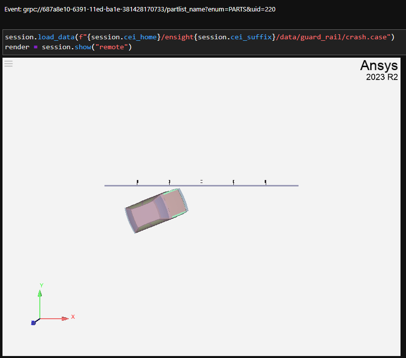

Note
Go to the end to download the full example code
Asynchronous event support#
Every attribute change may have an event callback associated with it. This example explores different connection mechanisms and different mechanisms for getting data values.
Start an EnSight session#
Launch and connect to an instance of EnSight. This example uses a local EnSight installation.
Register an event callback#
The simplest case for registering an event callback is for a specific
attribute on a specific object. This example registers an event callback
to the ensight.objs.core object. Whenever the PARTS attribute changes,
the callback function is called when a dataset is loaded. Every callback function
includes a string that is returned as a parameter to the callback function.
partlist_disp = widgets.HTML()
display(partlist_disp)
def part_list(name: str):
partlist_disp.value = f"Event: {name}"
session.add_callback(session.ensight.objs.core, "partlist_name", ["PARTS"], part_list)
Load a dataset#
This code loads some data included in the EnSight installation and brings up an interactive viewer for the scene.
The callback string is grpc://.../partlist_name?enum=PARTS&uid=220.
The callback is in the form of a URI, where “partlist_name” is the string from the
call to the add_callback method.
The name of the attribute is always returned in enum, and the ID of the object
is returned in uid.
session.load_data(f"{session.cei_home}/ensight{session.cei_suffix}/data/guard_rail/crash.case")
render = session.show("remote")
Register an event callback on a class#
Events can be associated with classes as well. This code associates a callback
with all part objects, listening to both the VISIBLE and COLORBYRGB
attributes. The urllib module is used to parse out the returned value.
After running this code, the cell value calls out the change in the color of the windshield.
part_disp = widgets.HTML()
display(part_disp)
def part_event(uri: str):
p = urlparse(uri)
q = parse_qs(p.query)
obj = session.ensight.objs.wrap_id(int(q["uid"][0]))
value = obj.getattr(q["enum"][0])
part_disp.value = f"Part: {obj}, Attribute: {q['enum'][0]} Value: {value}"
attribs = [session.ensight.objs.enums.VISIBLE, session.ensight.objs.enums.COLORBYRGB]
session.add_callback("'ENS_PART'", "partattr", attribs, part_event)
session.ensight.objs.core.PARTS["hood"][0].COLORBYRGB = [1.0, 0.0, 0.0]
Trigger with the VISIBLE attribute#
This code triggers the same callback when changes are madee to the
VISIBLE attribute.
session.ensight.objs.core.parts["windshields"].set_attr(session.ensight.objs.enums.VISIBLE, True)
Trigger with a callback macro#
This code extends the previous example by using the macro mechanism to capture
both visibility and RGB color values. The name string includes a mechanism
for including target object values directly in the returned URI. This mechanism
avoids the need to make PyEnSight calls from within a callback function. This
can avoid reentrancy and performance issues. This approach is more efficient
than the approach used in the previous example.
macro_disp = widgets.HTML()
display(macro_disp)
def macro_event(uri: str):
p = urlparse(uri)
q = parse_qs(p.query)
obj = session.ensight.objs.wrap_id(int(q["uid"][0]))
obj.getattr(q["enum"][0])
macro_disp.value = f"Part: {obj}, Attr: {q['enum'][0]} Visible: {q['visible']} RGB: {q['rgb']}"
attribs = [session.ensight.objs.enums.VISIBLE, session.ensight.objs.enums.COLORBYRGB]
name = "partmacro?visible={{VISIBLE}}&rgb={{COLORBYRGB}}"
session.add_callback("'ENS_PART'", name, attribs, macro_event)
session.ensight.objs.core.PARTS["hood"][0].COLORBYRGB = [0.0, 1.0, 0.0]
Close the session#
Close the connection and shut down the EnSight instance.
session.close()
Total running time of the script: ( 0 minutes 0.000 seconds)